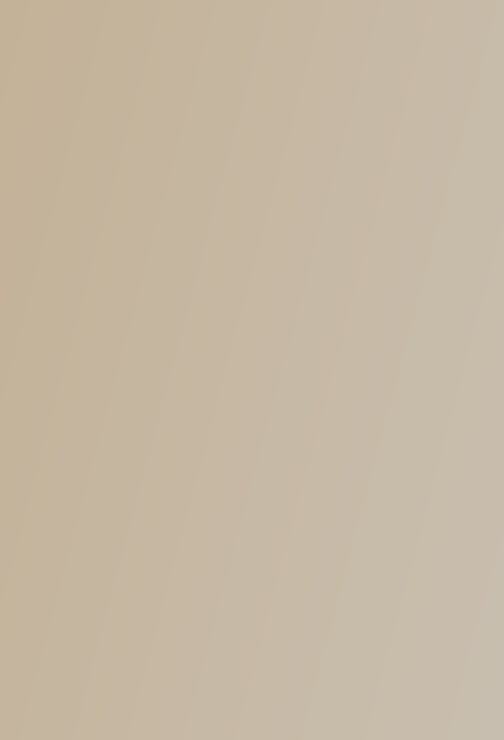
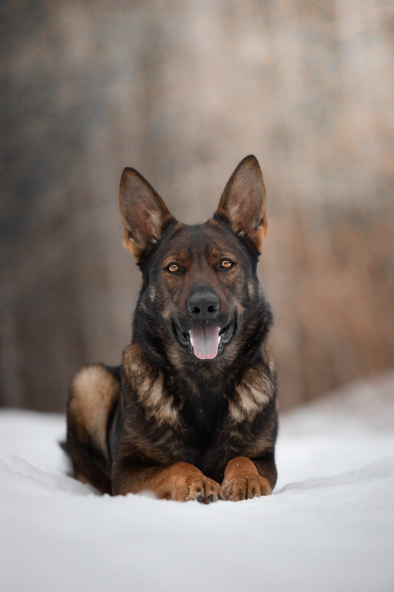
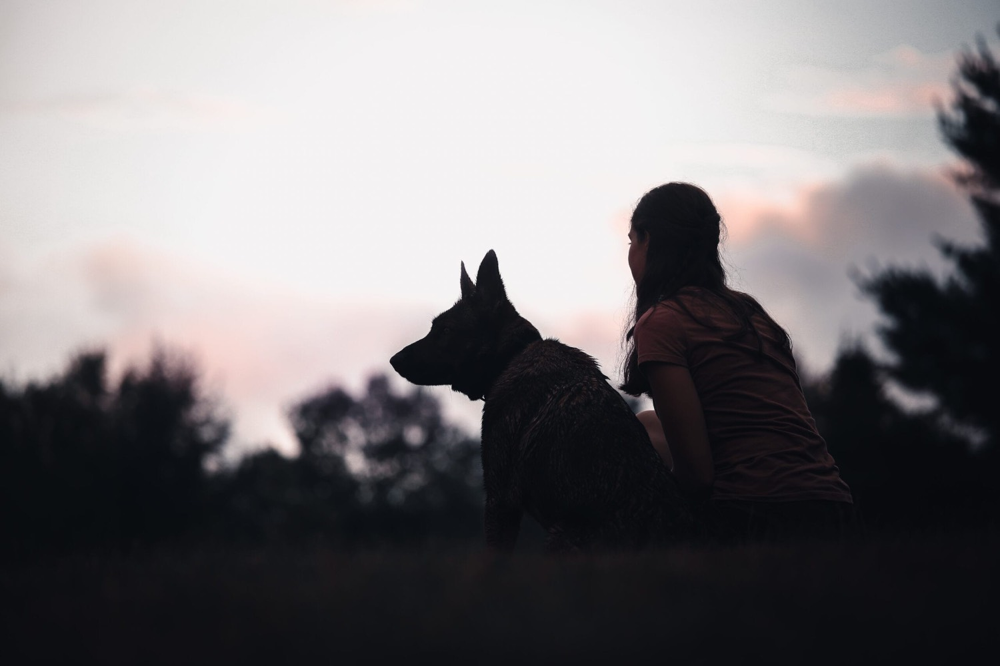
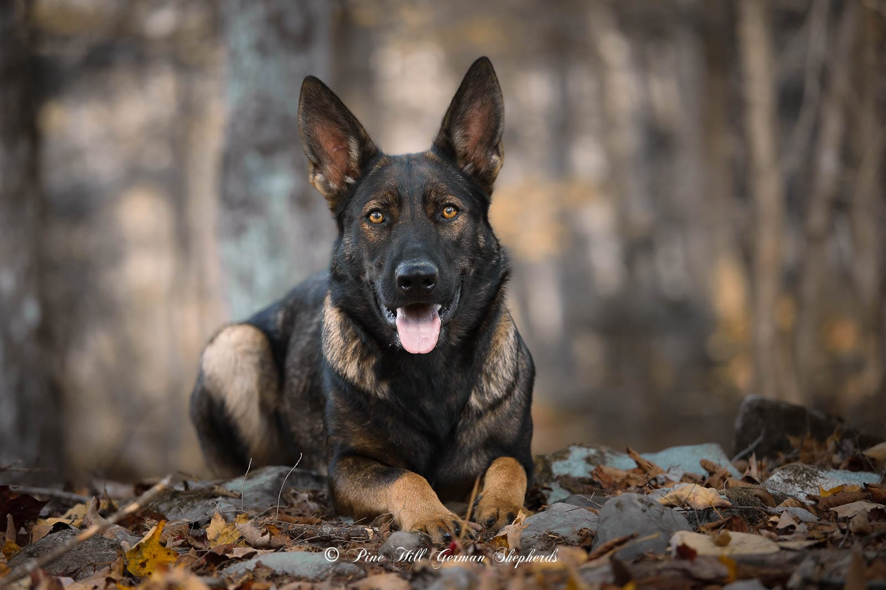
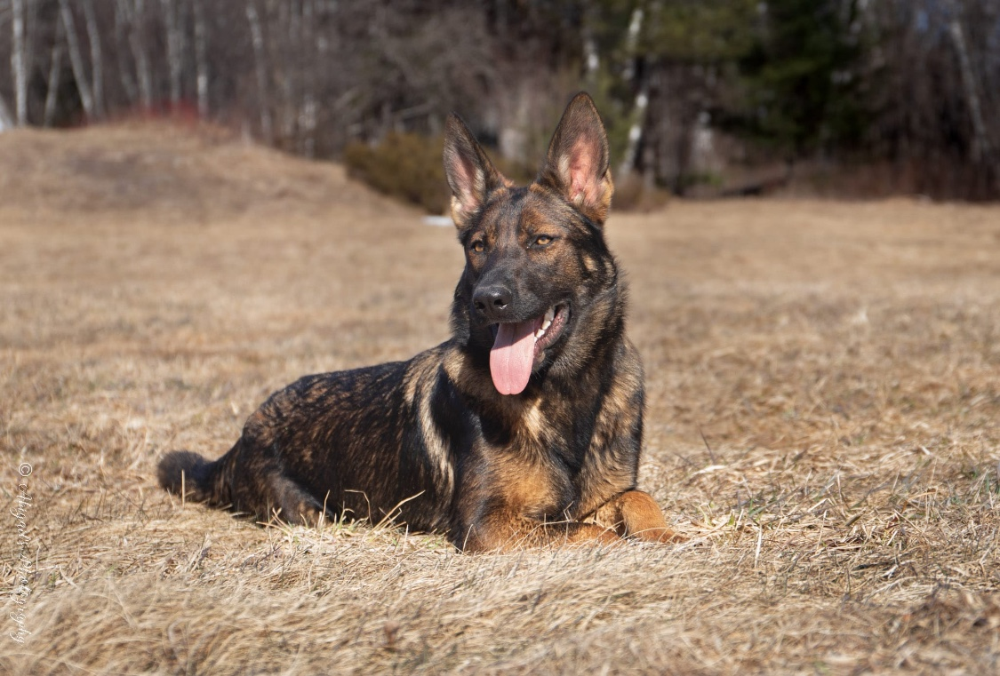
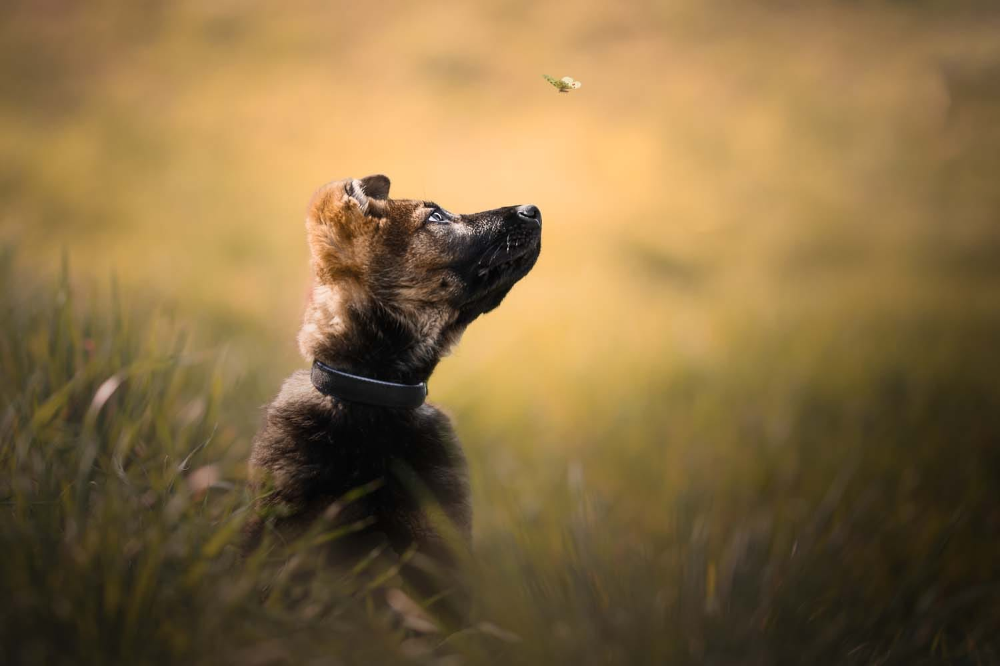
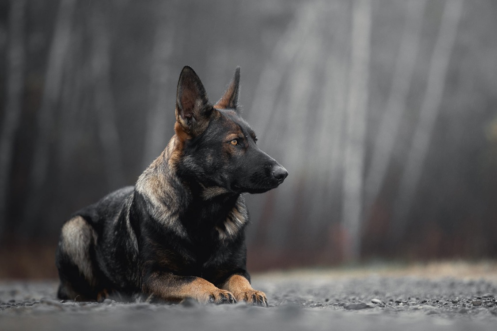
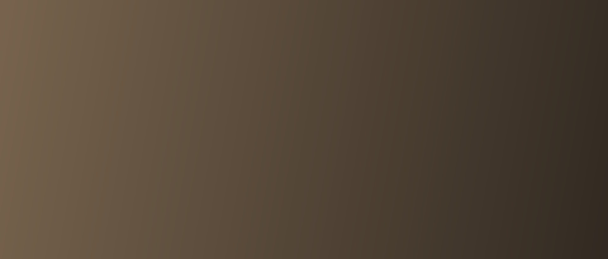

01
Health & Integrity
Every pairing begins with health testing and honest records. We breed for soundness first, and we tell the truth about it.

purposefully bred · intentionally raised · shepherds in the heart of maine
Raised with intention, our German Shepherds are bred for exceptional health, sound temperament, and true working ability that honor the standard of the breed. Every pairing is carefully planned, with health testing completed before breeding and a hands-on approach that builds confidence and connection from day one.

Rooted in Family. Defined by Quality.
Nestled in the hills of Maine, our dogs are raised with purpose and devotion through a program that blends working-line pedigree, intention, and heart. Every detail is deliberate — from health testing that goes beyond the breed standard, to early development designed to build confidence, sound nerve, and versatility.
Our hands-on approach means every puppy is raised with the same care we give our own dogs, preparing them to thrive as loyal companions or capable working partners. Each one is thoughtfully matched with a family who values the same care and quality.
Read Our Story
What guides us
01
Every pairing begins with health testing and honest records. We breed for soundness first, and we tell the truth about it.
02
Stable, confident dogs suited to family life. Nerve and disposition matter as much as structure.
03
Puppies are raised underfoot with early enrichment and socialization — never warehoused, never rushed.
04
The relationship doesn't end at pickup. We stay reachable for the life of every dog we place.
Our dogs
Every dog in our program is health tested well beyond the breed minimum — full results below.

Von Franzosisches Haus
OFA Hips & Elbows: Good/Normal · OFA Advanced · Echocardiogram: Normal · OFA CAER: Normal · Embark: Clear

Von Stephanitz
OFA Eyes: Good · OFA Elbows: Good · PennHIP: Excellent · DM: Clear · Genetics & All DNA: Clear
begin your journey
Litter A is the result of a carefully planned pairing between Ledger and Freda, backed by proven pedigrees and health testing well beyond the breed standard. From the very beginning, every puppy is raised with intention — building a foundation that supports confidence, adaptability, and an easy transition into the home.
Not the right time for Litter A? Join our waitlist to hear about future litters first.
Inquire About Litter A
Litter A · Ledger & Freda
How placement works
01
Send us a note about your household and what you want in a companion or working partner.
02
We talk — by phone or in person. Health records and pedigrees are on the table from the start.
03
We match puppies to homes on temperament testing and eight weeks of daily observation.
04
Puppies go home at eight to ten weeks with a health record, a starter plan, and our number.
Deposits & Payment
Tell us about your home and experience with dogs. We'll follow up to let you know if you're approved and answer any questions before you commit to anything.
A deposit secures your place on the list for Litter A, first come, first served. Deposits are non-refundable but transfer to a future litter if the timing isn't right.
Once temperament testing is complete, we'll help you choose the right match. The remaining balance is due at pickup — full pricing and payment details are shared with approved applicants.

The Program
Before a dog enters our breeding program, they clear a full panel of health testing — OFA hips, elbows, and eyes, PennHIP, cardiac and CAER exams, and full genetic and DNA clearances through Embark. We don't breed around a result we don't like, and we're glad to walk you through any dog's paperwork before you commit to a puppy.
Ask About Our ProgramStay Connected With Pine Hill German Shepherds

Known for their devotion, our Shepherds form close bonds with their families and carry a natural instinct to watch over them.
Highly intelligent and eager to work, they pick up commands and routines quickly — a rewarding dog to raise and train.
A well-bred working-line Shepherd carries itself with a calm, sure temperament — alert without being anxious.
Bred from proven working lines, our dogs carry the drive and structure for sport, service, or personal protection work.
Sound temperament under pressure is non-negotiable in our program — a dog that works confidently in real conditions.
Health-tested hips and elbows mean a dog that can sustain a working career, not just look the part.
Raising
Our puppies are whelped and raised inside our home — around footsteps, kitchen noise, visitors, and daily routine. From the first weeks they get structured early enrichment: new surfaces, gentle handling, novel sounds, and one-on-one time every day.
By the time a Pine Hill puppy goes home, it has met children and calm adult dogs, ridden in a car, and started crate and surface confidence work. Nothing about the process is rushed — that's the point.
First adventures outside
pine hill dogs
You've done your research on working-line German Shepherds and know what you're looking for — not just a look, but real drive and structure.
You value health testing and honest breeding practices, and you'd rather wait for the right litter than take a shortcut.
You're ready to invest real time in training, exercise, and structure for the life of the dog — not just the puppy stage.
Get in touch
Questions about our dogs, upcoming litters, or whether a working-line German Shepherd is right for your home — we're happy to talk it through. And we'll give you a straight answer, even when it's that a different dog would suit your home better.
— Abigail Hall, Pine Hill German Shepherds